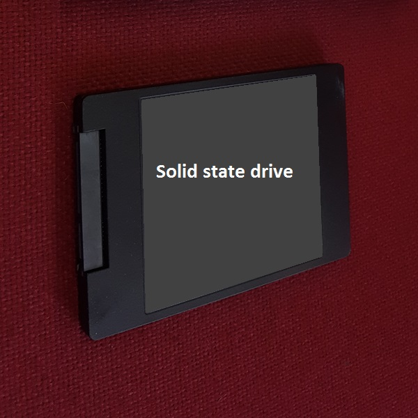

SSDs from Super-Disk-Sales |
||
A Solid State Drive is more frequently referred to as an SSD. It is a form of mass storage device similar to a hard disk drive (HDD). It supports reading and writing data (unlike some optical drives) and is non-volatile (maintains stored data when the machine is turned off). It currently uses NAND based flash memory.SSDs have much quicker read and write speeds than HDDs. They have no moving parts. With a HDD the disk has to "spin up" from its sleep state and they don't need to move a drive head to different parts of the drive to access data. As HDDs are used their read speed performance diminishes as data is often fragmented on the drives. This means a single file may be located in many different places on the disk and the read head has to move to each location in order to retrieve the data. As SSDs are not magnetic they do not suffer data loss if strong magnetic fields are close to the drive.Despite all these positives, SSDs are much more expensive than HDDs, in some cases more than 10 times as expensive per gigabyte. This means they often have smaller capacities than HDDs. They also have a limited number of write cycles, which may cause their performance to degrade over time. As this technology is relatively new no-one has reliable degradation data, but newer SSDs have improved reliability and should last several years before any reduction in performance can be seen. It will not be long before SSDs replace HDDs and the HDDs only location will be in museums alongside floppy disk drives. |
 |
|
Homepage |
Contact us |
Web page creation by Hothouse DesignLast edited by J |